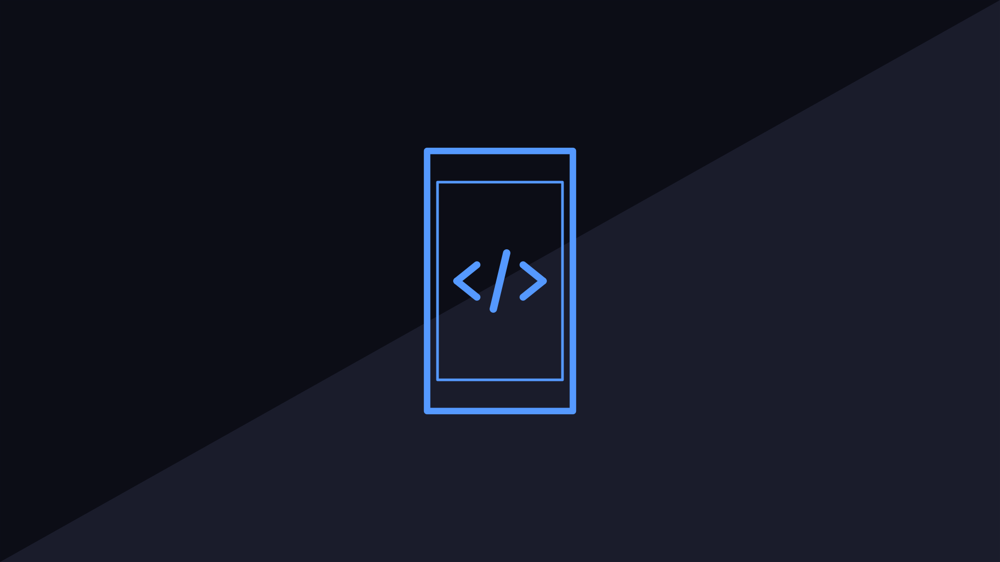
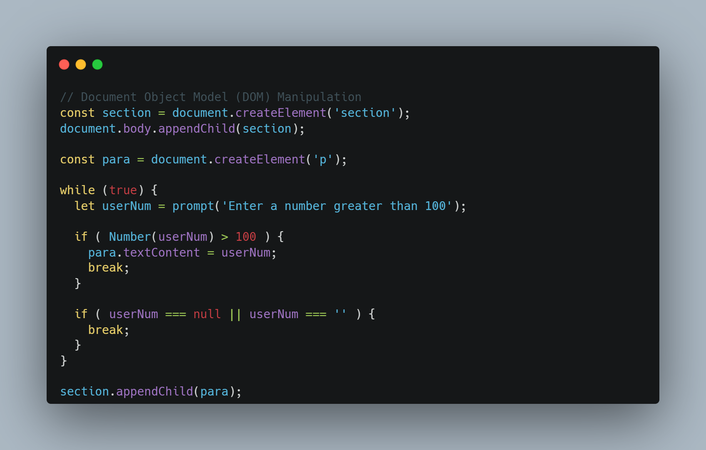
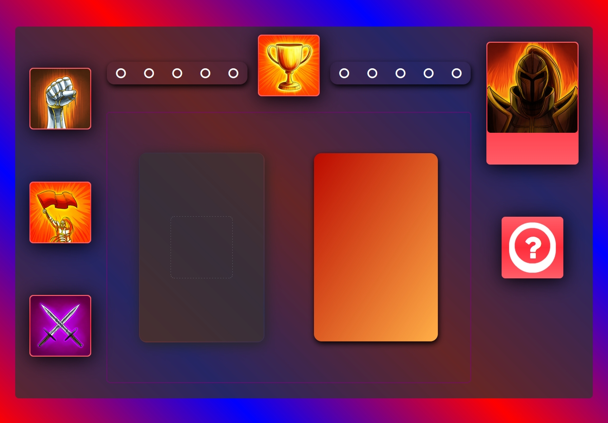
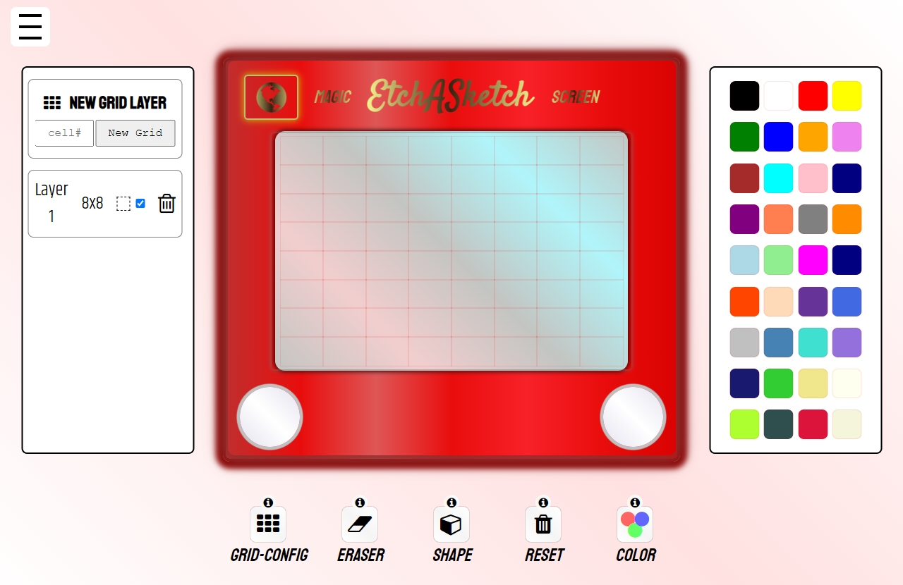

4
Month in Review: February 2022
Hi here, welcome to my month-in-review blog for Februray 2022!
Febraury milestones:
Febraury saw me continue learning fullstack development through The Odin Project.
#100DaysOfCode continued to keep me accountable and this was definitely helpful to track progress as I completed projects.
Staying disciplined and organised keeps my momentum going!
Document Object Model
The early part of Febraury saw me working through various JavaScript lessons. DOM (Document Object Model) maniplulation had just been introduced and I was a little bewildered at first. After tackling the JavaScript30 Drum Kit exercise my understanding grew on how things connected together. As the next Odin project was to build a GUI (Graphical User Interface) for my vanilla JavaScript Rock Paper Scissors game I thought it would be a great oppurtinity to deepdive further into DOM manipulation and also practice my CSS (Cascading Style Sheet).
Rock Paper Scissors
My idea for the Rock Paper Scissors GUI was for it to look like a tabletop game. The player would have a set of moves and the computer opponent would have a mystery move which would then be their respective card plays. Juggling all the moving parts was alittle intimidating at first and there was a few occasions I thought I'd never finish but because I knew I had to tweet, publish and continue learning, I decided to deleiever the project unfinished but almost complete. I very glad I did this as I've learnt building without feedback is the wrong approach, at least for me anyway.
After this project I was alot more comfortable using JavaScript and my DOM manipluation had come on leaps and bounds. The muscle memory on adding event listeners is very welcome and I learned how to create new HTML elements in JavaScript without writing the markup first + translate elements to new positions.
Etch-a-Sketch
Around the 15th I started working on the next Odin project which was to build an Etch-a-Sketch. The task was to create a grid of cells, allowing the user to draw over the area, erase the grid and change colour.
I have fond memories of the Etch-A-Sketch from my childhood so it was really enjoyable recreating it via CSS. I wrote the grid algorithm using JavaScript and it works by using a for loop to create a new div and store it an array. The div acts a cell within the grid and the user can create a new grid with one cell upto 86. Event lisetners were used to catch when the user clicked on the grid area and another when the user clicked down which triggers a draw state change message to be sent to a draw function.
I had alot of ideas for this one. One of the aspects I'm most proud of is the ability to layer grids and maniplulate each layer. The user can bring a layer to front, delete and add a grid outline to each indivdual layer. This took some working out as I had to update the layer index order depending how many elements were added/removed from the nodeList. To achive this I used the z-index property and reorded them using JavaScript. The layer name would then reflect its new position.
The other big feature is the colour picker. It uses the same principle algorithm as the grid but has a fixed number of cells, 36 in total which the user can click to change the cell colour and hovering over a colour displays its name.
The project was published on 25th Feb. Very proud of this one and I've had positive feedback from the community.
Lastly, as of this writing I have just finished JavaScript Fundamentals Part V and finished writing the algorithm for my calculator, which is the next Odin project.
Thanks for reading my blog on the month that was Febraury 2022!
TLDR: Good progress - 2 more projects finished!
Sort By:
mattxmade
P.S. This month's blog style references this reddit post
Reply
Share
Report
Save
Follow